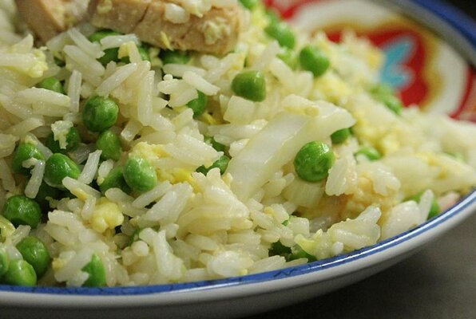

Fried Rice

Egg and Vegetable Fried Rice
It takes a very short time to make, and it is very healthy.
Per serving: 2192 calories.
Ingredients
- ¼ cup vegetable oil
- ½ cup sliced Chinese sweet pork sausage (lup cheong)
- 1 large egg, beaten
- 1 ½ teaspoons salt, divided
- ½ cup chopped bok choy
- 2 cups cold, cooked jasmine rice
Steps
- Heat vegetable oil in a large skillet over medium-high heat.
-
Stir sausage and egg into the hot oil; cook while stirring to scramble
the eggs until they begin to firm, about 2 minutes. Season egg mixture
with 1 teaspoon salt; add bok choy. Cook and stir until the bok choy
begins to wilt, 2 to 3 minutes.
- Break rice into small pieces and add to the skillet; cook while stirring to break the rice into individual grains